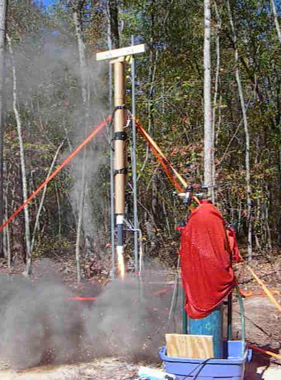

Project Summary
This project is the design and construction of a test stand suitable for testing hybrids up to 500 lbf thrust..
Goals:
- Design and build a modular test stand suitable for hybrid motors up to 500 lbf thrust
- Be able to prep the motor onto the stand in a garage, then take the motor and stand out to the test pad
- Integrated fire suppression
Notes
- The test stand is made of a 10' tall section of 16" triangular antenna tower, purchased cheap at a ham fest.
- The pad is a 16" square concrete paving block (from Home Deport) on 4 bags of gravel.
- The stand is anchored by 3 tower anchors, turned into the ground. These anchors are rated 11,000 lb working load, but we did not get them that deep into the ground. However, we need a working load of about 500 lbs, so we feel we are OK.
Progress
- Progress notes are linked here.
|
 |